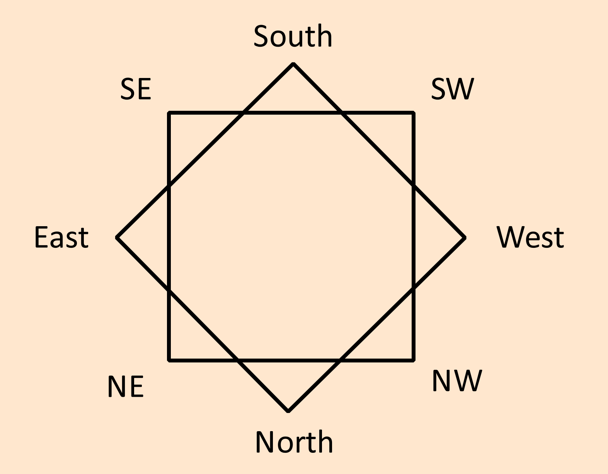

8 is a perfect number for directions and angles.
Movement in non analog games use this pattern commonly.
The eight angles can be applied to perspective art. The front face, back, left, right and in between faces of an object.
2D games use it for sprites to show different angles.
The Universal index also uses this as its symbol as it is a perfect division of space that is very useful.
Geometry
For eight I use a double square. Though octagrams and other geometries work too. North and south can be shifted if desired.
